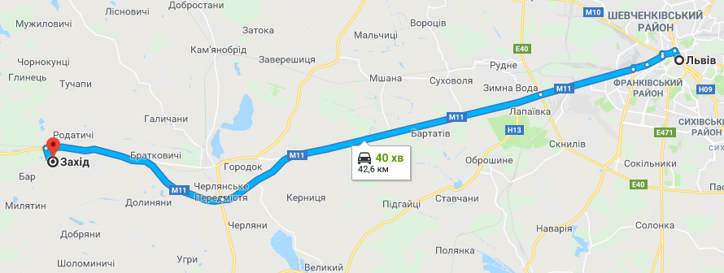
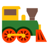

Фестиваль Zaxid - одна з найбільших та найпотужніших мистецьких подій країни. Як і минулого року, Захід 2019 відбудеться на території готельно-відпочинкового комплексу Чарівна долина в Родатичах неподалік від Львова (40 км в сторону польського кордону).
Територія оточена лісом, ставками та полем. Точні географічні координати фестивалю ЗАХІД: 49°47′56″ пн. ш. 23°31′07″ сх. д.
Фест триватиме три дні.

Територія оточена лісом, ставками та полем. Точні географічні координати фестивалю ЗАХІД: 49°47′56″ пн. ш. 23°31′07″ сх. д.
Фест триватиме три дні.
Як добратися?
Автомобілем:
До Львова добираємось як кому зручно - потягом, автобусом, автомобілем. Зі Львова автомобілем доїхати до фестивалю можна автострадою М11. Координати для навігатора: 49.785884, 23.498173.
До Львова добираємось як кому зручно - потягом, автобусом, автомобілем. Зі Львова автомобілем доїхати до фестивалю можна автострадою М11. Координати для навігатора: 49.785884, 23.498173.
Автобусом:
З головного залізничного вокзалу Львова курсуватимуть фестивальні автобуси.
З головного залізничного вокзалу Львова курсуватимуть фестивальні автобуси.
Електричкою:
З Приміського вокзалу станція Львів можна доїхати електричками. Через станції Львів-Родатичі прямують електропоїзди Львів-Мостиська ІІ (через Рудне, Мшана, Затока, Городок) та Львів-Судова Вишня.
З Приміського вокзалу станція Львів можна доїхати електричками. Через станції Львів-Родатичі прямують електропоїзди Львів-Мостиська ІІ (через Рудне, Мшана, Затока, Городок) та Львів-Судова Вишня.


Відчуй єдність і справжність себе та простору, адже Zaxidfest це саме те місце і саме той час!
Lykhach Oleksandr
september 2018
ДО ЗУСТРІЧІ НА ФЕСТИВАЛІ!